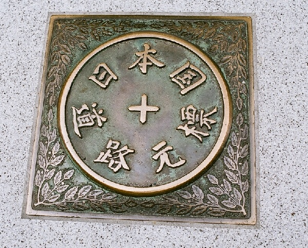
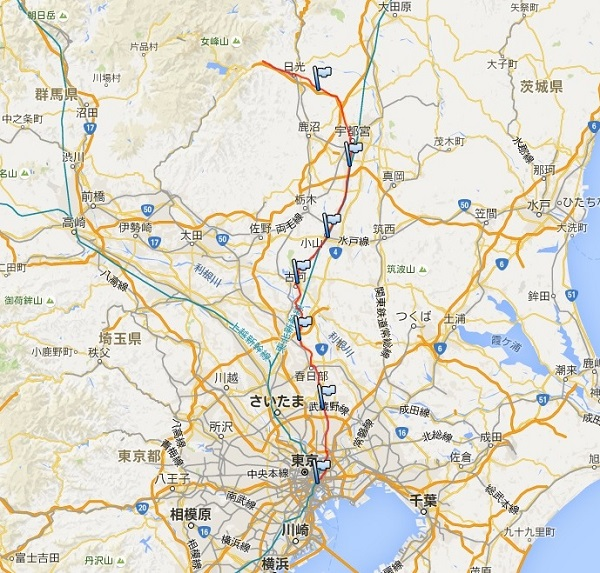

日本橋を出発して日光東照宮まで約147Km 標高差約587m 埼玉県の自宅から電車を乗り継ぎ日帰り 計7日間で完歩する。
| 年月日 | 出発駅・時間 | 到着駅・時間 | 歩き距離・時間 | 写真ﾌﾞﾛｸﾞ |
|---|---|---|---|---|
| 2014/9/19 | 東京駅_9：50 | 南越谷駅_16：14 | 27.0Km：6時間23分 | 2014/9.. 2014/9 |
| 2014/9/20 | 南越谷駅_9：02 | 杉戸高野台駅_14:42 | 26.0Km：5時間39分 | 2014/9 |
| 2014/9/21 | 杉戸高野台駅_9：34 | 古賀駅_15:08 | 23.5Km：5時間34分 | 2014/9 |
| 2014/9/23 | 古賀駅_9：39 | 小山駅_14:10 | 19.2Km：4時間30分 | 2014/9 |
| 2014/9/26 | 小山駅_10:03 | 雀宮駅_15:41 | 23.2Km：5時間37分 | 2014/10 |
| 2014/10/4 | 雀宮駅_8:41 | 杉並木の中のバス停_14:52 | 27.2Km：6時間10分 | 2014/10 |
| 2014/10/7 | 杉並木の中のバス停_11:40 | 日光駅_71:01 | 21.6Km：5時間20分 | 2014/10完歩する |
日本橋にある”日本国道路元標”主要国道の起点です。

旧日光街道 徒歩ルート
